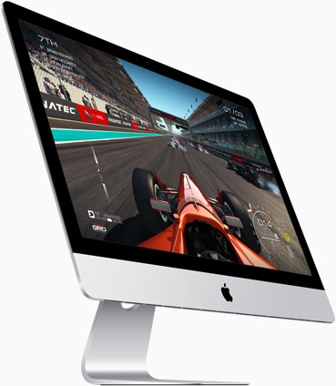
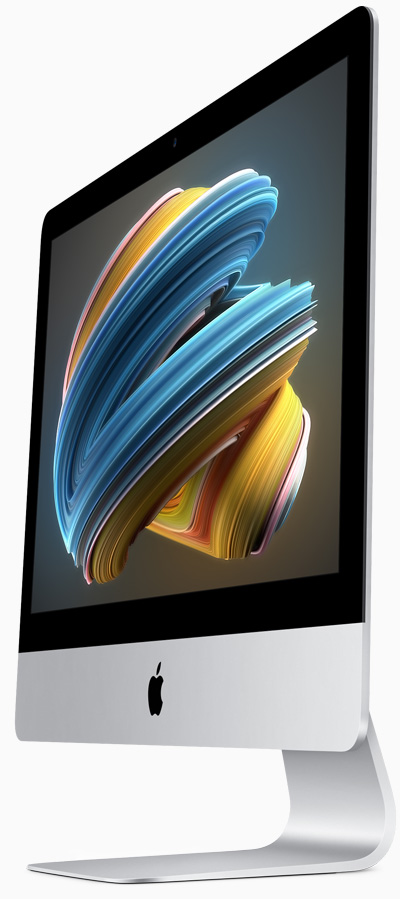
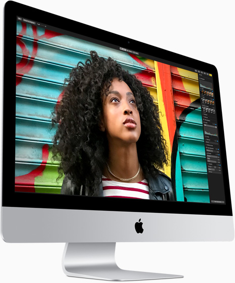
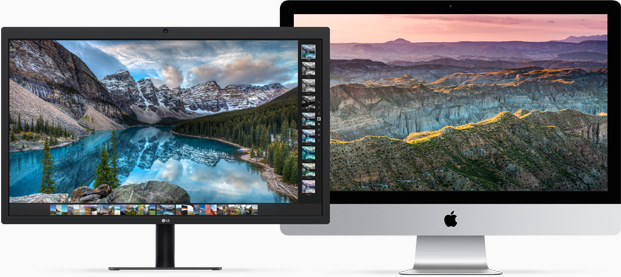

A experiência mais imersiva que um computador pode oferecer. Esta é a ideia por trás do iMac. Agora, ela ficou ainda mais poderosa. O novo iMac vem com processadores potentes, chips gráficos com tecnologia de última geração, armazenamento inovador e conectividade mais rápida. E você vai ver o que todo esse desempenho pode realizar na tela Retina mais brilhante já feita para um iMac.
O iMac está mais rápido e poderoso do que nunca com os processadores Intel Core i5 e i7 de sétima geração e gráficos de alto desempenho. E o armazenamento não ficou para trás: ganhou mais velocidade usando o Fusion Drive, agora disponível nas configurações‑padrão dos modelos com tela Retina de 21,5 e 27 polegadas. Pense em tudo o que você adora fazer em um iMac. Está feito.


O iMac inclui os novos e potentes chips gráficos Radeon Pro série 500 que transformam tudo em um espetáculo. O iMac de 27 polegadas com tela Retina 5K tem até 8 GB de VRAM dedicada. E o iMac de 21,5 polegadas com tela Retina 4K tem até 4 GB. Os dois criam efeitos visuais e gráficos 3D impressionantes. E têm recursos avançados de edição de vídeo que permitem trabalhar em projetos multicam no Final Cut Pro X com até cinco streams de vídeo 4K em resolução total. É a força bruta a serviço da beleza.
As cores que você captura não fogem de você.
O mundo é cheio de cores espetaculares e o iMac faz questão de levar mais delas até seus olhos. A tela Retina usa gama de cores P3. E, em vez dos LEDs brancos comuns, tem LEDs avançados de fósforo vermelho e verde. Assim, as três cores do padrão RGB (vermelho, verde e azul) são representadas igualmente e mostram as cores da vida real com muito mais equilíbrio e fidelidade.


Seu trabalho vira um espetáculo.
O Thunderbolt 3 permite adicionar um monitor 5K à impressionante tela do seu iMac. Ou conectar dois monitores 4K e colocar 32 milhões de pixels na sua frente.
É por isso que não existe nada parecido com o Mac.
O macOS é o sistema operacional responsável por tudo que você faz no Mac. E o macOS High Sierra chegou ao nível mais alto, trazendo novas tecnologias e recursos aprimorados para seu Mac.